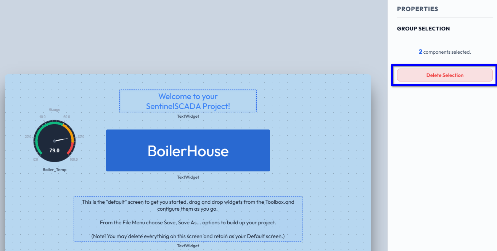
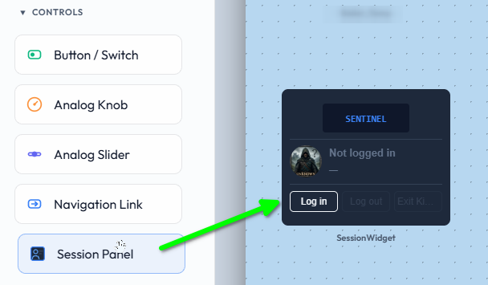
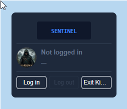
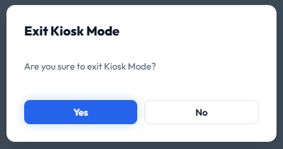
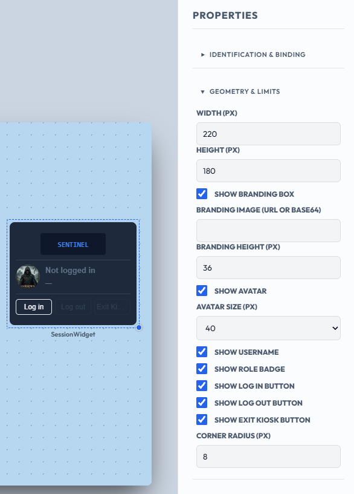
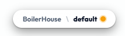
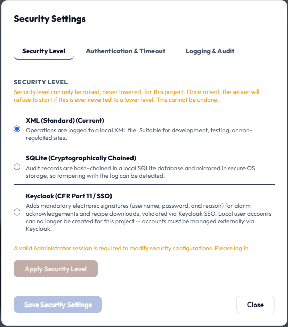
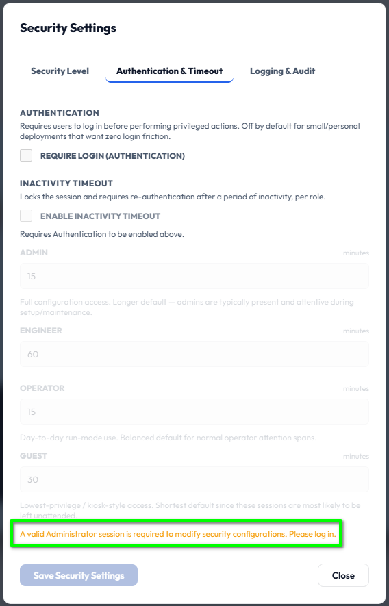
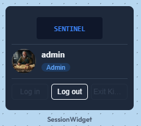

SentinelSCADA › Tutorial › Chapter 3
In the previous chapter we saw that we can switch our screen from Design Mode to Kiosk Mode, but that there was no way to exit that mode. We can switch between Design and Run and back again, because the menu bar remains visible. In Kiosk Mode it does not. So, we have a multi-purpose widget for that: the Session Panel.
First though, let's continue with our BoilerHouse project and make some room. Select, or multi-select, the top and bottom Text Widgets and press Del. Alternatively, when more than one widget is selected the Properties Panel shows a GROUP SELECTION section: press the Delete Selection button there.

After this we could move and resize the BoilerHouse banner too.
From the Toolbox, expand the Controls section, then select and drag a Session Panel widget onto the screen.

Without further ado, choose View > Kiosk Mode. Instantly we have two features available as buttons on the Session Panel:

If the Exit Kiosk button label looks truncated, simply widen the Session Panel widget.
Tap the Exit Kiosk button.

You will notice that you have not been asked to authenticate your user role. That is simply because this is a new XML mode project, and we have not set a switch to require any authentication.
For now, press Yes and we are back in Design Mode.
If you select the Session Panel and browse the Properties Panel you will see a good range of options to customise this widget.

We can readily create users, manage passwords, assign roles, even add avatars for all users under the Security > User Management… option. That is a subject for a later chapter.
Should you have any pending edits, an orange dot displays after the screen name at the top of the window.

We should have a quick look at the security settings for orientation. Choose Security > Security Settings… and you are presented with a dialog with three tabs.

The first tab, Security Level, holds the security mode. Essentially you can only ever ratchet up the mode. You can never roll back, so choose carefully when the extra security of a higher mode becomes essential.
Select the second tab, Authentication & Timeout.

Here we find the Require Login (Authentication) checkbox, which is unticked by default. This is the switch we referred to earlier. Once ticked, users must be logged in to do certain things, for example, exit Kiosk Mode.
Below it, Enable Inactivity Timeout (which requires Authentication to be enabled) manages how long each role can remain logged in before being logged out after a period of inactivity. The defaults are:
| Role | Timeout (minutes) |
|---|---|
| Admin | 15 |
| Engineer | 60 |
| Operator | 15 |
| Guest | 30 |
Each can be adjusted to suit your site. The third tab, Logging & Audit, is covered in a later chapter.
One final note is the message at the bottom of the dialog: “A valid Administrator session is required to modify security configurations. Please log in.” As we saw in the previous chapter, the default user name admin with password admin will let you apply these settings.
To do this, close the Security dialog and be sure you have saved any screen changes. Then choose Security > Log In…, log in, and return to the Security Settings dialog, where you will find all controls and buttons enabled.
As an aside, if you did go and log in as Admin you may have noticed the Session Panel widget has updated accordingly. It shows the logged-in user and role, and only Log out remains active. The Log in and Exit Kiosk buttons are greyed out.

In this chapter we have introduced the widget that lets your users log in and out of the running SCADA application, and exit Kiosk Mode back into Design Mode. In the real world you would tightly control these features, especially if the SCADA is public facing in a factory or concourse environment. We have other tools and features to help you build the granular access control you need, which we will look at in due course.
In the next chapter we show you how to add a WorldSystem driver to provide access to time and calendar values, and in turn, the setting of Clock widgets.